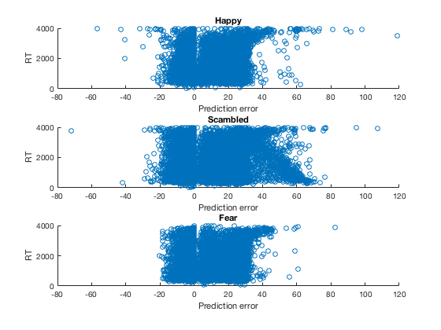
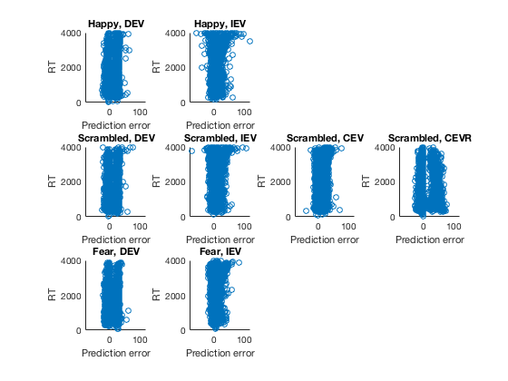

Contents
try to understand pe - rt relationship
figure(1);clf;
subplot(3,1,1)
scatter(gold.pemaxlag(gold.emotion_num == 1),gold.rt(gold.emotion_num == 1)); axis([-80 120 0 4000]); title('Happy'); ylabel('RT'); xlabel('Prediction error');
subplot(3,1,2)
scatter(gold.pemaxlag(gold.emotion_num == 0),gold.rt(gold.emotion_num == 0)); axis([-80 120 0 4000]); title('Scambled');ylabel('RT'); xlabel('Prediction error');
subplot(3,1,3)
scatter(gold.pemaxlag(gold.emotion_num == -1),gold.rt(gold.emotion_num == -1)); axis([-80 120 0 4000]); title('Fear');ylabel('RT'); xlabel('Prediction error');
figure(2);clf;
subplot(3,4,1)
scatter(gold.pemaxlag(gold.emotion_num == 1 & strcmpi(cellstr(gold.rewFunc),'DEV')),gold.rt(gold.emotion_num == 1 & strcmpi(cellstr(gold.rewFunc),'DEV'))); axis([-80 120 0 4000]); title('Happy, DEV'); ylabel('RT'); xlabel('Prediction error');
subplot(3,4,2)
scatter(gold.pemaxlag(gold.emotion_num == 1 & strcmpi(cellstr(gold.rewFunc),'IEV')),gold.rt(gold.emotion_num == 1 & strcmpi(cellstr(gold.rewFunc),'IEV'))); axis([-80 120 0 4000]); title('Happy, IEV'); ylabel('RT'); xlabel('Prediction error');
subplot(3,4,5)
scatter(gold.pemaxlag(gold.emotion_num == 0 & strcmpi(cellstr(gold.rewFunc),'DEV')),gold.rt(gold.emotion_num == 0 & strcmpi(cellstr(gold.rewFunc),'DEV'))); axis([-80 120 0 4000]); title('Scrambled, DEV'); ylabel('RT'); xlabel('Prediction error');
subplot(3,4,6)
scatter(gold.pemaxlag(gold.emotion_num == 0 & strcmpi(cellstr(gold.rewFunc),'IEV')),gold.rt(gold.emotion_num == 0 & strcmpi(cellstr(gold.rewFunc),'IEV'))); axis([-80 120 0 4000]); title('Scrambled, IEV'); ylabel('RT'); xlabel('Prediction error');
subplot(3,4,7)
scatter(gold.pemaxlag(gold.emotion_num == 0 & strcmpi(cellstr(gold.rewFunc),'CEV')),gold.rt(gold.emotion_num == 0 & strcmpi(cellstr(gold.rewFunc),'CEV'))); axis([-80 120 0 4000]); title('Scrambled, CEV'); ylabel('RT'); xlabel('Prediction error');
subplot(3,4,8)
scatter(gold.pemaxlag(gold.emotion_num == 0 & strcmpi(cellstr(gold.rewFunc),'CEVR')),gold.rt(gold.emotion_num == 0 & strcmpi(cellstr(gold.rewFunc),'CEVR'))); axis([-80 120 0 4000]); title('Scrambled, CEVR'); ylabel('RT'); xlabel('Prediction error');
subplot(3,4,9)
scatter(gold.pemaxlag(gold.emotion_num == -1 & strcmpi(cellstr(gold.rewFunc),'DEV')),gold.rt(gold.emotion_num == -1 & strcmpi(cellstr(gold.rewFunc),'DEV'))); axis([-80 120 0 4000]); title('Fear, DEV'); ylabel('RT'); xlabel('Prediction error');
subplot(3,4,10)
scatter(gold.pemaxlag(gold.emotion_num == -1 & strcmpi(cellstr(gold.rewFunc),'IEV')),gold.rt(gold.emotion_num == -1 & strcmpi(cellstr(gold.rewFunc),'IEV'))); axis([-80 120 0 4000]); title('Fear, IEV'); ylabel('RT'); xlabel('Prediction error');
 